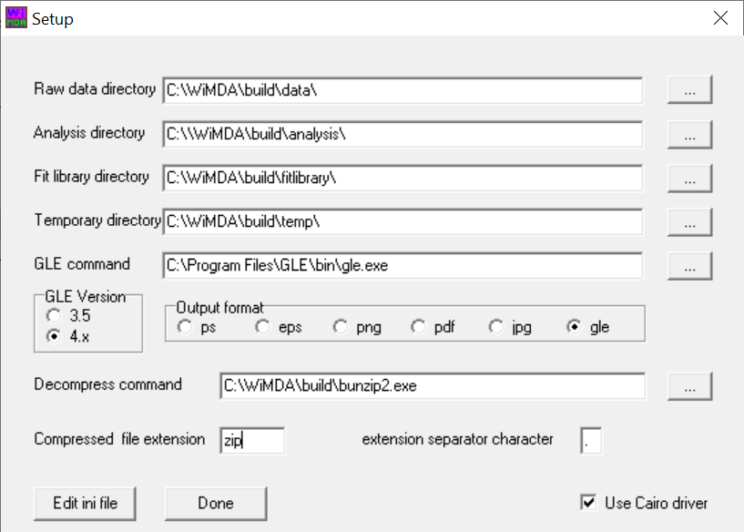

Installing WiMDA
A fully tested, stable version of WiMDA is available in 32-bit, and additionally a 64-bit version is available for beta testing. We recommend using the 32-bit version until the 64-bit version has been fully tested.
Prerequisites
WiMDA requires the following (free) software packages to run successfully:
Ghostscript - this is software which GLE needs to be able to plot successfully. It can be downloaded from https://www.ghostscript.com/ (click ‘Download’ then ‘Ghostscript’, then select either the 32- or 64-bit version).
GLE - this is a plotting tool which is used by WiMDA to produce publication-quality figures. It can be downloaded from https://glx.sourceforge.io/ (this website also contains a good user guide and examples detailing how to use the program). Make sure the architecture matches that of the ghostscript library you have installed on your system: a 64-bit version of GLE will not work with a 32-bit version of Ghostscript.
Hint
A full GLE installation also requires a LATEX distribution to be installed on your system, but this is not required for WiMDA.
Installation
Installing on Windows Computers
To install WiMDA on Windows, after installing the prerequisites above first download either the 32-bit package or the (beta) 64-bit package. Installing WiMDA is a matter of simply decompressing these zip archives on your system in the location you wish to install WiMDA. The program can be run by running wimda.exe.
Installing on Mac/Linux Computers
Although WiMDA cannot run on Mac/Linux systems natively, it is able to work using Wine, which is an emulation framework which allows windows programs to run under unix-based systems. The easiest way to install Wine is using a package manager, for example on MacOS one could use HomeBrew and run (in Terminal):
brew install wine-stable
On Ubuntu-like systems Wine can be installed using apt:
sudo apt-get install wine-stable
Once Wine is installed, follow the Windows instructions above. To run wine.exe, you may need to go to terminal and run:
wine /path/to/wine.exe
Setting up WiMDA
When you run wimda.exe for the first time, you will be greeted with a dialog prompting you to set WiMDA up. The setup dialog looks like the following:
{kind=link}
The fields are as follows:
Field |
Description |
|---|---|
Raw data directory |
Location of the raw muon data to be analysed. |
Analysis directory |
Location where the analysis files should be written to (e.g. fit logs, fit tables, etc). |
Fit library directory |
Location where the user-created fit libraries should be loaded from. |
Temporary directory |
Location where the temporary files are stored. |
GLE command |
The location of the gle executable (see below). |
GLE version |
The version of GLE you have installed on your system (most likely 4.x). |
Output format |
The output format of the plots produced by the model fitting. |
Decompress command |
The command used to decompress compressed data files. |
Compressed file extension |
The extension of compressed files: WiMDA will automatically decompress any files using the decompress command which have this file extension. |
Extension separator character |
The character your system uses to separate filenames from their extension. You are very unlikely to need to change this! |
Most of these settings can be kept the way they are, apart from the GLE command: this should be replaced with the location GLE is installed on your system. This is usually:
C:\Program Files (x86)\GLE\bin\gle.exe
for the 32-bit version of GLE and
C:\Program Files\GLE\bin\gle.exe
for the 64-bit.